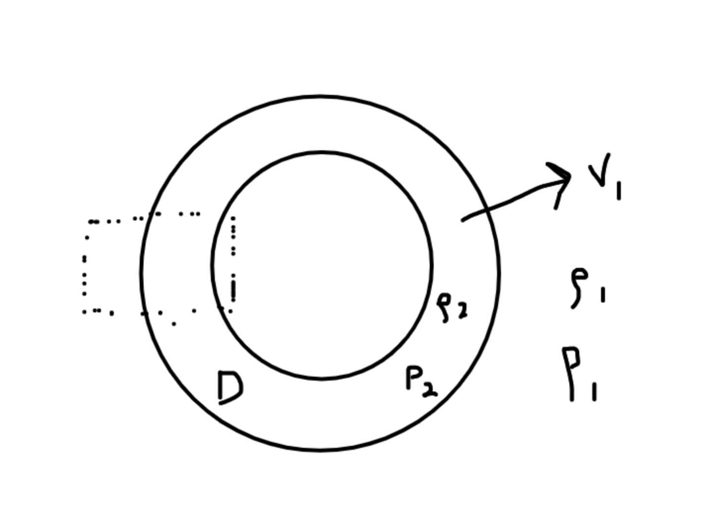
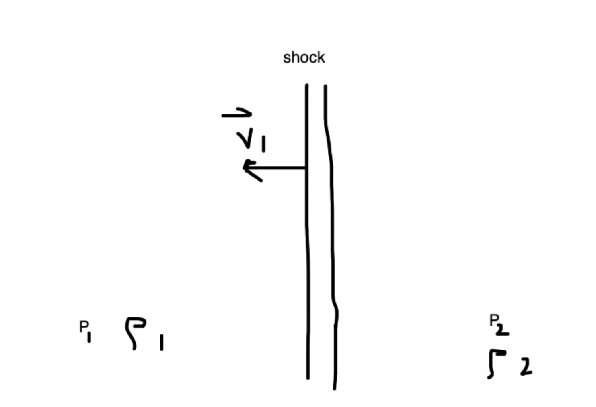
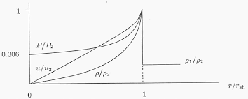

Waves
Contents
Waves¶
We will now begin to consider perturbations to our equations. Here, we consider small, stable perturbations. The standard recipe is to break our fluid properties \((\vec v, \rho, P, \Phi, \cdots)\) into \(0th\) order \(+ 1\)st order pieces. We will assume that the first order pieces are \(\ll\) than the \(0\)th order pieces. The word for this is linear perturbation theory.
Here is a note on notation. We will have something like:
where the subscript refers to the order, i.e., \(\vec v_1 \ll \vec v_0\). This means:
\(\vec v = \vec v_0 + \vec v_1\)
\(P = P_0 + P_1\)
\(\rho = \rho_0 + \rho_1\)
\(\Phi = \Phi_0 + \Phi_1\)
Note
The thermal behavior of the perturbations \(P_1\), \(\rho_1\) need to behave the same way was the \(0\)th order counterpart. An example is the equation of state – an atmosphere might be isothermal, but the perturbations can be adiabatic.
Sound Waves: The Simplest Case¶
Consider a static, uniform (unperturbed) medium. We will ignore gravity. Thus, all we have is pressure for the physics.
In this case,
We now plug these into our fluid equations.
Zeroth Order Equations¶
The \(0\)th order fluid equations are:
The Continuity Equation
This is satisfied trivially. This tells us nothing.
Euler Equation
This is also satisfied trivially.
First Order Equations¶
Continuity Equation
Euler Equation
Note that the advection term is \(0\) to first order.
This is simply two coupled equations which we can solve! But, before that, we will introduce a new quantity, the sound speed \(v_s\).
Sound Speed
where this measures how pressure changes with density.
Combining the continuity and the euler equation together by taking the time derivative of the first equation:
where we have assumed that the sound speed is a constant. This is a trivial waves equation! We have solved this in our childhood:
The solution is thus just a relationship between \(k\) and \(\omega\). This gives a dispersion relation for a free wave:
For completeness, we have:
The Group Velocity
v_g \equiv \frac{\partial \omega}{\partial k} = v_s
The Phase Velocity
v_{phase} \equiv \frac{\omega}{k} = v_s
For sound waves, these are independent of the wavenumber \(k\). When this is the case, we say we have “non-dispersive waves.”
What about perturbed fluid velocities/other quantities?¶
We can use our solution for \(\rho\) and the Euler Equation above to get:
We can show that:
Note that the perturb quantites \(\vec v_1, \rho,\) and \(P\) are all in phase.
Fourier Transforms and Conceptual Review¶
Note that FTs are nice since we term finite difference problems into algebraic problems. This is awesome numerically!
We have some density perturbation. This gives us a pressure gradient and thus a force. This force accelerates the fluid element. This perturbed velocity further induces a density perturbation, leading to sound wave propagation!
Some Numbers and Notes About Sound Speed¶
Isothermal Sound Speed
Isothermal Sound Speed:
Remember that the ideal gas has: \(P = \frac{\rho}{\mu m_p} k_b T\). This makes:
Adiabatic Sound Speed
The adiabatic ideal gas has \(P = \kappa \rho^\gamma\). Taking the derivative, we have:
This gives:
Which one of these speeds are relevant?
Examples of Air Sound Speed¶
Adiabatic: (A useful thing to know: \(k_b T \sim \frac{1}{40} \text{ eV}\) at room temperature air)
Has \(v_s^\text{adiabatic} = \sqrt{\frac{7}{5}\frac{1/40 \text{ eV}}{28.8 \cdot 10^{9} \text{ eV }}} \cdot c \sim 330 \text{ m/s}\)
Isothermal:
Has \(v_s^\text{isothermal} \sim 280 \text{ m/s}\).
The data is closer to the adiabatic case.
Examples of Water Sound Speed¶
This is closer to \(v_s \sim 1500 \text{ m/s}\) !
Examples of Sound Speed in Iron¶
This is closer to \(v_s \sim 5 \text{ km/s}\).
Gravity Waves¶
Let’s look at water waves on the surface of Earth with the same spirit as in sound waves.

Consider a single fluid of constant density \(\rho_0\) in equilibrium (\(\vec v_0 = \vec 0\). ) This means that the Euler Equation is:
Thus:
Perturbed Equations¶
We have \(\vec v = \vec v_0 + \vec v_1 = \vec v_1\), \(P = P_0 + P_1\), \(\rho = \rho_0 = \text{ constant, incompressible}\), and \(\rho_1 = 0\) since it is incompressible. Note that \(\vec \nabla \Phi = - \vec g\) due to the external gravitational field of Earth. \(\Phi_1 = 0\) means that the self-gravity of the water is negligible. The linearized, 1st order fluid equations are thus:
Continuity Equation
Remember from before that the incompressible condition implies:
Note we chose our coodinates (considering waves travelling along \(x\)-axis) such that this equation is:
Euler Equation
We have:
Let’s write out the components:
We can choose to solve for \(P\) or \(\vec v\), and we choose \(P\) first. We can use the equation from the Contunity Equation (by take the partial derivative) to get:
This is:
This is a Laplace Equation in \(2D\). This has solutions! Because we are looking for waves along \(x\), we have the ansatz:
Plug this into the Laplace Equation, and we get:
All the action will now come from the boundary conditions. We can write:
where the second equation for \(v_{1z}\) comes from the 2nd Euler Equation above and where we have gone into Fourier Space.
Boundary Conditions¶
1. \(z=-H\), the bottom of the sea. Here, we have:
This condition implies that \(\boxed{B \rightarrow e^{-2kH}}\). Immediately, we have:
Similarly,
2. At the surface of the (free aka no force) air-water interface (z=0 for our coordinates). Let’s introduce the fluid displacement vector \(\vec \xi(\vec r, t)\) defined such that:
The vertical displacement is thus:
which we actually hav aen equation for in 1. .
Note that saying we have a “free air water interface” is the same as saying we have “constant pressure along fluid element.” This translates to a condition:
Continuing from last time…
Now, let’s recall we have, from the unperturbed equations:
When we impose the first boundary condition at the bottom of the sea, we get:
We went to the Euler equation, and got:
We then introduced the fluid displacement \(\vec \xi\) such that \(d\xi/dt \equiv \vec v_1 \rightarrow \xi_{z} = \frac{v_{1z}}{-i\omega} = \frac{Ak}{\rho_0 \omega^2 }e^{i(kx-\omega t)}e^{-kh} \cdot 2\sinh(k(z+H))\).
When we impose the second boundary condition (at the air-water interface), and if we assume that we have no surface tension, we have:
At \(z=0\), we thus have (recalling that \(P_0 = -\rho_0 gz\)):
We have expressions for all this stuff (\(P_1\) and \(\xi_{z}\) from above)! The only significant pieces give:
Note that this is a dispersion relation! We thus have:
This is the dispersion relation for surface water waves under no external forces at the boundaries.
Some notes from above: Eulerian vs. Lagrangian Perturbations¶
Let’s come back to :
What does this mean? Where does this come from?
An Eulerian perturbation looks like:
This is what we have been doing so far. The Lagrangian perturbation looks at the perturbation along the fluid element as it is traveling. This looks like:
We can thus relate the two pictures:
We taylor expand:
The first and third term are just Eulerian perturbations!
The extra piece of our perturbation then pops out, and that’s why we had that at the boundary from before.
**This means that we are requiring the pressure to be constant along a fluid element, not just at a fixed \(\vec r\). ** This is another way of saying we are force-free along the fluid element.
The Dispersion Relation¶
The disperion relation derived above is fascinating. Let’s play around in different regimes. Let’s consider \(\lambda \ll H\) and \(\lambda \gg H\) for the two interesting limits.
1. Deep Water Limit: \(H \gg \lambda\).
In this limit, our intuition tells us that we don’t really care about \(H\) because the waves are too small to feel the ground. Recall that:
Thus our disperion relation is:
This is a dispersive wave – different wavelengths travel with different speeds. How can we see this? Well the phase velocity is:
Shorter wave length disturbances travel more slowly.
2. Shallow Water Limit: \(H \ll \lambda\).
Our dispersion relation becomes:
This is equite intuitive – when we have long wavelengths compared to \(H\), we shoild know about \(H\)! It shows up, whereas before it disappeared. Note that:
Which is independent of \(k\)! All waves travel at the same speed, making this non-dispersive. A wave packet does not spread apart as it travels along the surface. This is the limit that matters for tsunamis. As you move toward the shore, \(H\) decreases.
Plugging in Numbers for Tsunamis¶
These behave as shallow water gravity waves. Typically \(\lambda \sim \text{ many kilometers }\). The average depth of the Pacific Ocean is around \(4\) km. We know \(g = 9.8\) m/s\(^2\). In this case:
It takes roughly 10-20 hours to cross the Pacific!
Capillary Waves¶
This is the case when surface tension is non-negligible. We will do this in Problem Set 3. In this case, we have:
where the negative sign is downward, and \(T\) is a constant for surface tension.
Shock Waves¶
Shocks are fundamentally discontinuous. We will look in front of and behind these shocks, and relate these two systems with boundary conditions. This builds up to the jump conditions.
Shocks are characterized by sudden changes in the fluid properties. We introduce the Mach number.
Mach Number
{kind=link}
We can see that we get a Mach cone, with the shock fronts shown in blue in the Figure above. The angle of the shock front \(\alpha\) is given by:
The region within the cone is in causal contact. We say that interior to the cone is shocked, and outside the cone is ambient/pre-shock.
{kind=link}
We now want to examine interior and exterior to this shock front.
Shocks – Jump Conditions (Rankine-Hugoniot Relations)¶
These describe boundary conditions across shocks (in the frame of shocks).
Let’s imagine two regions separated by a shock boundary. On the left is pre-shock with \(P_1\), \(\rho_1\), and \(v_1\). The right side is post-shock, with \(P_2\), \(\rho_2\) and \(v_2\). The shock is contained within a box of \(\Delta x\) width. Typically cold, fast flow gets shocked to hot, slow flow, with:
\(v_1 > v_2\)
\(\rho_1 < \rho_2\)
\(P_1 < P_2\)
In this box around the shock front, we have:
1. Mass Conservation (Starting with Continuity Equation)
We can integrate over \(x\):
Thus:
Jump Condition 1
Mass flux in is equal to the mass flux out.
2. Momentum Conservation (Conservative Form of Euler Equation)
The momentum flux \(T_{ij}\) term is:
Momentum cannot accumulate at the boundary, so momentum flux in has to equal the momentum flux out. The one dimensional form of this is:
Shocks convert ram pressure into thermal pressure, preserving the sum.
3. Energy Conservation ()
We had:
For adiabatic shocks \(\dot{Q}_{cool}\sim 0\). When this is the case, we have
And thus:
Note that our first equation tells us that the \(\rho v\) terms cancel out. Also, \(\Phi_1 = \Phi_2\). This gives us:
Our three jump conditions are thus:
Note
Note
Note
Note that the internal energy is \(\epsilon\) in the above equations.
Example: Adiabatic, Ideal Gas¶
Under these assumptions, recall the polytropic relation:
And the internal energy per unit mass:
And our sound speed:
If we additionally assume that \(\gamma\) is constant across shocks, we can simplify the 3rd jump condition. This becomes (for adibatic ideal gases, remember):
Re-writing this in terms of \(v_s\):
Re-writing our jump conditions once more (which is very, very tedious) in a way which removes \(v_1\) and \(v_2\). The trick that makes things much quicker is to define:
Then, re-write the second jump condition as:
We can now re-write the third jump condition in terms of \(j\). Lots of tedious work leads to:
Lastly, we want to express everything in terms of the pre-shock (upstream) Mach number since we often can’t measure post-shock (downstream) conditions. Recall that:
For convenience, let’s define \(x \equiv \frac{v_2}{v_1} \equiv \frac{\rho_1}{\rho_2}\) from jump condition 1. Using JC2:
Thus:
And thus:
And thus:
One last step – use this expression along with our most recently boxed equation (in class, we called this JC3’), which gives:
The right hand side can be simplified:
And:
Collecting terms:
which has solutions:
We can also find, skipping the math, from Jump Condition 2:
We can also derive the post-shock Mach number:
We can show that, if \(M_1>1\), then \(M_2 <1\). The post-shock is always subsonic. For completeness, we can relate the temperatures as well:
Checking the Limits and the Physics¶
Let’s take the (1) no shock limit (\(x=1, v_1=v_2, P_1=P_2,....\)) and the (2) strong shock limit (\(M_1 \gg 1\)).
1. No shock – uninteresting.
2. Strong Shock:
Let’s look at pressure, now. When \(M_1 \gg 1\), we reach:
Pressure is not capped! Note that for air:
Temperature is also not capped, and we will see this on Problem Set 3.
Blast Waves¶
Here, we consider strong shocks generated by explosions. This is interesting because we have a self-similar solution, the Sedov-Taylor Similarity Solution, which was used in WWII by the Russians.
Consider a star exploding isotropically with a shock front of thickness \(D\) traveling with velocity \(v_1\). Outside the shock is \(\rho_1\), and inside the thin shell, we will assume has \(\rho_2\) density, the same density internal to the shock. We assume vacuum interior the shocked shell.
{kind=link}
If we zoom in on the box, we basically have our pre and post-shock picture from above!
{kind=link}
In the pre-shock fluid’s rest frame, the post-sock speed is \(v_2^\prime \equiv v_1 - v_2 = v_1(1-\frac{\gamma-1}{\gamma+1}) = \frac{2}{\gamma + 1} v_1\).
We also assume that most mass within \(R\) is swept into a shell of thickness \(D\):
And thus:
Note that we actaully know the strong-shock ratio of densities:
Shell of Shocked Gas¶
The shell of shocked gas is moving at speed \(v_1 = \dot{R}(t)\) in the frame of the pre-shock fluid. The shell’s kinetic energy is:
The shell’s internal energy:
Both the internal energy and the kinetic energy thus give us:
This is the blast-wave scaling relationship. The radius doesn’t depend linearly on time, instead it scales with time to the 2-5ths. This only holds for adiabatic explosions, by the way. It also doesn’t hold in the very beginning of the explosion.
The Sedov Phase¶
Let’s recall a few conditions we had from above. Recall the picture of a spherical shell expanding from a spherical star. Inside the shell of width \(D\), we are post-shock. Outside this expanding shell, we have pre-shock conditions.
For strong shocks (\(M_1 \gg1\) ), we had:
And also
We saw last time that the shell expands in the Sedov Phase:
Usually, you don’t enter this phase right away – typically at first, \(v\) is constant. Then, we start to lose energy, and as we plow material into the shell, this scaling (called the Sedov-Taylor phase), takes over.
Examples of Blast Waves¶
1. Atomic Bomb
We had around \(6\) kg of plutonium in a \(\sim 4000\) kg metal container. Let’s estimate the explosion energy. The energy source in this case is nuclear fission:
Initially, the ejecta are:
Now let’s calculate the radius of the mushroom cloud (the shock-front!):
And thus:
2. Supernova
\(M\) in this case, has \(M\sim 10 M_\odot \sim 10^{34} \text{ g}\). Immediately, we can calculate:
Doing the exactly the same thing above, knowing \(\rho_1 = \rho_{ISM} \sim 1 \frac{\text{H atom}}{\text{cm}^3}\):
Thus, \(R\sim 0.3 \text{pc}\) at 1 year old.
Sedov-Taylor Self-Similar Solution and the Strucutre of Blast Waves¶
What if we want to know the radial profile of the blast wave? Let’s examine the post-shock radial profile for a 1D spherical shock. What is \(\rho(r,t), P(r,t), v(r,t)\) behind a shock front?
In the Sedov phase, we can define a dimensionless radius \(\xi\equiv \frac{r}{R(t)}\). In this case, we have \(R(t)\) as a characteristic length scale for shocks in the explosion. We will now look for Ansatz for self-similar solution of the form:
where the \(\tilde\) functions are dimensionless.
These definitions allow us to change variables in the fluid equations, like:
When we do this, our fluid equations become only functions of \(\xi\) (since time is embedded in R(t)). After tons of algebra, we can find the solutions for these three functions. Here are what these look like:
{kind=link}